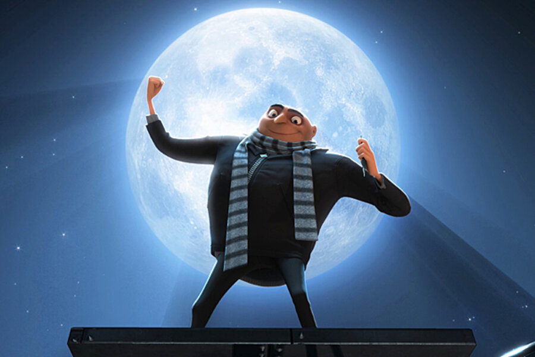
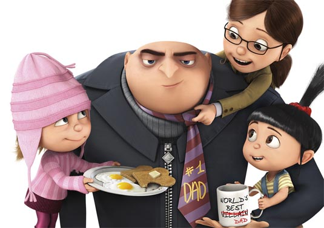
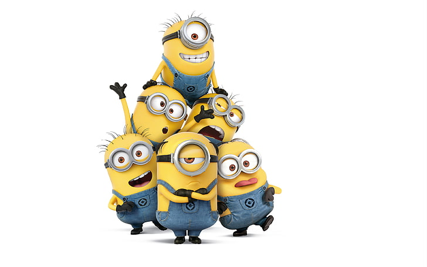

Felonius Gru popularly known as "Gru" is the lead character in the computer-animated media franchise "Despicable Me". A reformed super-villain who once concocted a plan to steal the Earth's moon with his assistant Doctor Nefario and his army of Minions. Because the plan is expensive, Gru decided to apply for a bank loan from the Bank of Evil. The director of the Bank of Evil will approve his loan application only if Gru can steal a dreaded Shrink Ray. In his quest to steal the Shrink Ray, Gru met three orphan girls - Margo, Edith and Agnes in which he somehow used them to steal the Shrink Ray and eventually adopted them. Gru met his wife Lucy Wilde Gru from the AVL Anti-Villain League when she decided to recruit Gru to investigate the theft of a mutagen called PX-41 serum, stolen from the arctic circle.
Gru was once a sneaky, manipulative, cold-hearted villain who has a Dracula-Like character and was determined to be the greatest villain in the world. He has cruel and sadistic personality. He likes to use his Freeze Ray to freeze people that he hates or sometimes just for the sake of it. He has an assistant named Dr. Nefario and an army of Minions whom he has no intention of giving a raise. To become the greatest villain, Gru together with Dr Nefario and his Minions formulated a plan to steal the Moon!
He later reforms and becomes a superhero upon adopting three orphan girls. As time goes on, he grows to genuinely love them and enjoyed spending time with his daughters then eventually putting aside his evil plans. Because of his love for his daughters, Gru turned into a softie, sweetie, gentle and friendlier person in which Dr. Nefario disapproved and wanted the girls to be sent back to the orphanage. However after sending them back to the orphanage, he felt upset about leaving them and later admitted that it was the worst mistake of his life. He took back the girls and then they became one happy adventurous family.
Agnes is one of Gru's adopted daughters alongside her big sisters Margo and Edith. She is the youngest child of the three. She has brown eyes and has a jet black hair tied in an upward ponytail with a red scrunchie. She is known to scream so loud that it can caused window glasses to crack. She greatly adores unicorns. Her once favourite toy is a fluffy stuffed unicorn they got from the carnival after Gru knocked over a target spaceship in a carnival booth in which he completely destroyed.
Margo is the eldest adopted child of Gru. She was horribly treated when she was still an orphan. Like her sisters, she wished to be adopted by somebody who will love them. She does not like her sister Edith's mischief but will join Edith if it is against someone she does not like. Quite often she has a sarcastic sense of humor and wit, and outsmart Gru several times by threatening to cause him grief or bargaining with him to get her own way. One occasion where Gru refuses to read to them and she says they will disturb all night long. Margo loves ballet and is very good at it. Margo being the eldest was the first to fall for boys, in which Gru is very uncomfortable with it.
She is the adopted middle child of Gru. She has dark bluish-grey eyes, light blonde shaggy cut hair and freckles and always seen wearing a striped pink chullo. She shares similar traits with Gru being very mischievous, destructive and has a sense of humor. At first, she is quiet and reserved, and oppose to the idea of being adopted. Edith like Margo is also good at ballet, and loves doing it with her sisters.
Lucy is Gru's wife and adoptive mother to Margo, Edith, and Agnes. She used to work as an agent in the AVL Anti-Villain League. They met when Lucy went to hire Gru and bring him to the AVL's headquarters to hunt down the thief of the mutagen PX-41 serum. She has green eyes and bright red hair that is pulled back in a bun with short bangs. She has fair skin with freckles and has a very thin body. The first time she met Gru she was serious and a stoic woman but after being with Gru she became generally a happy, enthusiastic, cheerful and perky.
Dr. Joseph Albert Nefario, most commonly referred to as Dr. Nefario is Gru's gadgeteer and resides in Gru's underground lair and laboratory. He builds and designs Gru's machines and helped Gru to shock the world with the "Greatest Crime of the Century". He resembles a stereotypical mad scientist who is mildly overweight and is always seen wearing a labcoat, gloves, and trademark goggles. He disapproved of Gru's adopting the girls hence he decided to leave him. He briefly became El Macho's right-hand man and main henchman but eventually return to Gru's side.
They are small, yellow, cylindrical creatures, whom some have one or two eyes. They are known to speak in a gibberish and incomprehensible language. They are much childish, impulsive creatures with little self-control but smart in some ways. Gru gets along with them, seems to know each of them by name and are fiercely loyal to him. Minions enjoy playing with the girls - Agnes, Edith, and Margo. They love banana, apple and ice cream. They bring the humor to Gru's family and their adventures.
